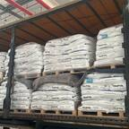
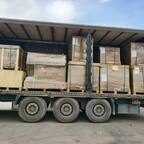
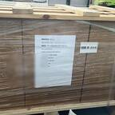

WAYBILL · Articles
China to Iran by truck: read these first
Freight is quoted on request. Hub-to-customs: currently 21–23 days from the Wuqia crossing to Tehran Customs, not to your door.
ROUTE
China to Iran by road: TIR trucking, Wuqia to Tehran Customs in 21–23 days LOG
Departure log: real China–Iran shipment records, load by load TERMS Hub-to-customs vs DDP: CPT/DAP to Tehran West Customs TIR How TIR works on the China–Iran corridor CARNET
Iran's TIR carnet shortage and your China cargo KHORGOS Khorgos or Irkeshtam: the 0.4% is only on the Irkeshtam route IRKESHTAM Wuqia and Irkeshtam: one exit, two names, plus the 0.4% DAYS China–Iran transit time: 21–23 days Wuqia to Tehran DAYS China to Iran road transit time, leg by leg from the Wuqia crossing COST What the China–Iran road freight depends on HUB Yiwu or Shenzhen: which origin hub for China–Iran TIR trucking QUOTE How to request a China–Iran trucking quote CBM / KG CBM and gross weight for a China–Iran trucking quote AFTER After you request a China–Iran trucking quote FTL / LCL FTL or LCL to Tehran Customs PORTS China exit crossings: Khorgos and Irkeshtam MODES China to Iran: road, sea, or rail TRANSIT Central Asia transit: Kazakhstan and Turkmenistan under TIR DOCS Documents for China–Iran TIR road freight ELEC Shipping electronics by truck LITHIUM Shipping lithium batteries by truck from China to Iran MACH Shipping machinery by truck SOLAR Shipping solar panels and inverters by truck from China to Iran BUILD Shipping building materials by truck AUTO Shipping auto parts by truck from China to Iran CKU The CKU railway: under construction, not open CHECKLIST Your first China–Iran shipment: the checklist HORMUZ The overland route skips the Strait of Hormuz BROKER Choosing your Iran customs broker ARRIVAL After the truck arrives at Tehran West Customs LCL LCL to Tehran Customs: three costly mistakes UZ Uzbekistan on the China–Iran corridor VEHICLES Exporting complete vehicles and EVs: three methods CARRIER Vehicle-carrier trucks: types, pooling rules & loading safety